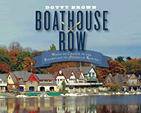

<HTML><head><script> (function(i,s,o,g,r,a,m){i['GoogleAnalyticsObject']=r;i[r]=i[r]||function(){  (i[r].q=i[r].q||[]).push(arguments)},i[r].l=1*new Date();a=s.createElement(o),  m=s.getElementsByTagName(o)[0];a.async=1;a.src=g;m.parentNode.insertBefore(a,m)   })(window,document,'script','//www.google-analytics.com/analytics.js','ga');   ga('create', 'UA-43183130-1', 'temple.edu');   ga('send', 'pageview'); </script><title>Dotty Brown: Boathouse Row - Print</TITLE><link rel="stylesheet" href="../general.css" type="text/css"><SCRIPT LANGUAGE = JAVASCRIPT></SCRIPT></HEAD><BODY LINK="#3152A5" VLINK="#3152A5" ALINK=Gray BGCOLOR=White><CENTER><P CLASS=intro><br>A magisterial history of Philadelphia's iconic Boathouse Row<br><br></P></CENTER><br>&nbsp;<!--none//--><Table width="100%" border=0 cellspacing=5><tr><td width="175" align="center"></td><td><h1 class = "booktitle">Boathouse Row</h1> <h1 class = "subtitle">Waves of Change in the Birthplace of American Rowing</h1><h3 class="author">Dotty Brown</h3><p class="info"><p class="info">cloth EAN:  978-1-4399-1282-9 (ISBN:1-4399-1282-3)</br>$35.00, Nov 16, <font color=#990033>Available</font><br><p class="info"><p class="info">288 pp, 10 x 8, 63 color photos, 3 line drawings, 110 halftones</p></td></tr></table></P></td></tr></table><BR><BLOCKQUOTE><p>"Boathouse Row<i> is a must-read for anyone interested in the sport of rowing and the enormous contributions of those who once plied the Schuylkill River. Dotty Brown chronicles not only the famous athletes of yore, like John B. Kelly, but those noteworthy artists, architects, businessmen, and politicians who helped to build this historic piece of riverbank into the living dynasty that it remains today. With the deft hand of a skilled writer, she&nbsp;unravels a Philadelphia story filled with fascinating characters, revealing new insights on old stories that have remained shrouded in mystery, and supplements her narrative with beautiful artwork and photography</i>."<br>&#8212;<b>Daniel J. Boyne</b>, author of <i>Kelly: A Father, a Son, an American Quest</i><br></BLOCKQUOTE><P><P><p>The history of Philadelphia's Boathouse Row is both wide and deep. Dotty Brown, an avid rower and former editor at the <i>Philadelphia Inquirer</i>, immersed herself in boathouse archives to provide a comprehensive history of rowing in Philadelphia. She takes readers behind the scenes to recount the era when rowing was the spectator sport of its time-and the subject of Thomas Eakins' early artwork-through the heyday of the famed Kelly dynasty, and the fight for women to get the right to row. (Yes, it really was a fight, and it took generations to win.)<br><p>With more than 160 photographs, a third of them in full color, <i>Boathouse Row</i> chronicles the "waves of change" as various groups of different races, classes, and genders fought for access to water and the sport. Chapters also discuss the architectural one-upmanship that defined Boathouse Row after Frank Furness designed the stunning and eclectic Undine Barge Club, and the regattas that continue to take place today on the Schuylkill River, including the forgotten forces that propelled high school rowing.<br><p>Beautifully written and illustrated, <i>Boathouse Row </i>will be a keepsake for rowers and spectators alike. <br><p><i>This publication was supported by a generous donation from H.F. (Gerry) Lenfest.</i><br><P CLASS="top"><A HREF="#top">BACK TO TOP</A></P></p><P><BR><H2 class="inpageheading">Excerpt</h2><P>Excerpt available at <a href="http://www.temple.edu/tempress">www.temple.edu/tempress</a></p><P CLASS="top"><A HREF="#top">BACK TO TOP</A></P></p><p></b></p><BR>

<P><h2  class="inpageheading"><A NAME="reviews"></a>Reviews</h2><p>"<i>Brown reveals numerous charismatic and talented personalities, tells a slew of frequently amusing and inspiring stories, and leaves the lucky reader understanding one of the prouder aspects of Philadelphia sports and recreational culture. Beautifully illustrated, this is the rare volume that both serves as a handsome coffee table book and as a first-rate read. It fills a gap in the literature and show remain the standard work on boat racing's own Philadelphia story for decades to come."</i><br/>&#8212;<b>Pennsylvania Heritage</b><br><P CLASS="top"><A HREF="#top">BACK TO TOP</A></P></b></p>
<p><h2 class="inpageheading"><A NAME="contents"></a>Contents</h2><P><SPAN STYLE="font-family: 'Verdana';font-size: 13px;" >Preface<BR><BR>1. Before Boathouse Row: First There Was a Dam<BR>2. Thomas Eakins: In the Heyday of Rowing, a Young Artist Paints His Friends<BR>3. Frank Furness: Architectural One-upmanship Remakes the Row<BR>4. John B. Kelly: An Irish Bricklayer Builds a Legend and Legacy<BR>5. Tom Curran and Joe Burk: The Collegiate Calling of Two American Champions<BR>6. Ernestine Bayer: Women and Their Fight for the Right to Row<BR>7. The &ldquo;Vesper Eight&rdquo;: A Motley Crew Vies for an Olympic Berth<BR>8. Edward T. Stotesbury: The Forgotten Forces of High School Rowing<BR>Epilogue<BR>The Schuylkill Navy and the Clubs of Boathouse Row<BR><BR>Acknowledgments<BR>Notes<BR>Bibliography <BR>Index</SPAN></P><P CLASS="top"><A HREF="#top">BACK TO TOP</A></P></p></P><BR>&nbsp;<p><P><H2  class="inpageheading"><A NAME="author bio"></a>About the Author(s)</H2><p><b>Dotty Brown</b> is a former reporter and editor at the <i>Philadelphia Inquirer</i>. During her newspaper career, she edited numerous prize-winning projects, including one that won a Pulitzer Prize. She is also a member of the Vesper Boat Club. Visit her online at www.boathouserowthebook.com.<br><P CLASS="top"><A HREF="#top">BACK TO TOP</A></P></P><p><h2  class="inpageheading"><A NAME="subjects"></a>Subject Categories</h2><P><A HREF="/tempress/general.html" TARGET="_top">General Interest</a><BR><P><A HREF="/tempress/history.html" TARGET="_top">History</a><BR><P><A HREF="/tempress/philly.html" TARGET="_top">Philadelphia Region</a></P></P></p><P></P><P>&nbsp;</P><font face="Arial" size="1"><a href="copyright.html" OnMouseOver="window.status='Web Copyright Policy';return true;" OnMouseOut="window.status=''" TITLE="Web Copyright Policy">&copy;</a> 2017 <a href="http://www.temple.edu" target="new" OnMouseOver="window.status='Link to Temple University home page';return true;" OnMouseOut="window.status=''" TITLE="Link to Temple University home page">Temple University</a>. All Rights Reserved. This page: <a href="http://www.temple.edu/tempress/titles/2375_reg.html"OnMouseOver="window.status='Link to the book page';return true;" OnMouseOut="window.status=''" TITLE="Link to the book page">http://www.temple.edu/tempress/titles/2375_reg.html.</a></font></BODY></HTML>                    
